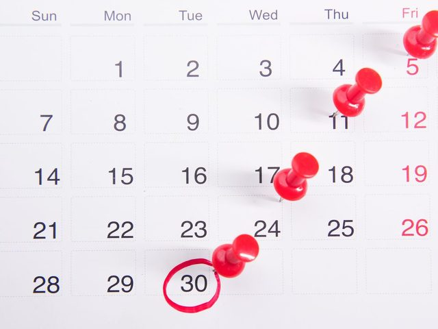
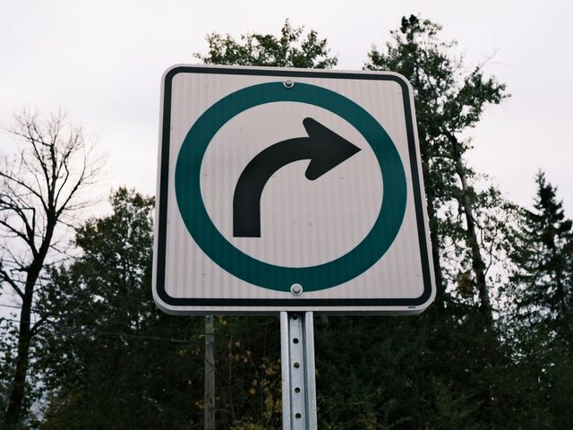

VOCABULARY · LALA WORD UNIT 3
Sports Day．一字多義（三）
運動會上，跑第二名是 second，跑完也可以說 The race is over。這個單元有 5 個主題單字、6 個更多單字，再整理 date／day、on／above／over、they're／their／there，和字首 un-（unhappy、unlucky）。
共 13 個單字．點 🔊 聽發音

1aroundprep. / adv.
圍繞；轉身；轉過來；到處；在附近；大約
- 1prep.圍繞The moon goes around the Earth.月亮繞著地球轉。
- 2adv.轉身；轉過來 turn around 轉身Turn around and look at me.轉過來看著我。
- 3adv.到處 look around 到處看；show… around 帶…參觀We walked around the night market.我們在夜市到處逛。
- 4adv.在附近 around the corner 在轉角；即將到來Is there a bank around here?這附近有銀行嗎？
- 5adv.大約I get up around six o'clock.我大約六點起床。

2backadv. / n. / v.
向後；回到原來的樣子；回覆；返回；背部；倒退；支持
back - backed - backed - backing
- 1adv.向後Please step back from the door.請從門邊往後退。
- 2adv.回到原來的樣子 give back 歸還；pay back 還錢My hair will grow back soon.我的頭髮很快就會長回來。
- 3adv.回覆；返回I'll call you back later.我等一下再回你電話。
- 4n.背部 back to back 背靠背；連續地My back hurts after playing basketball.打完籃球我的背好痛。
- 5v.倒退Dad backed the car out of the garage.爸爸把車倒出車庫。
- 6v.支持 back up 支持；備份Don't worry. We will back you up.別擔心，我們會支持你。

3secondadj. / n. / adv. / v.
第二的；再一次的；第二名；其次；秒；贊成
second - seconded - seconded - seconding
- 1adj.第二的；再一次的 a second time 再一次；second-hand 二手的This is my second time in Japan.這是我第二次來日本。
- 2n.第二名Tom came second in the race.Tom 賽跑得第二名。
- 3adv.其次First, wash your hands. Second, set the table.首先洗手，其次擺好餐具。
- 4n.秒 in seconds 一下子；馬上Wait a second, please.請等一下。
- 5v.贊成A: Let's order pizza. B: I second that!A：我們叫披薩吧。 B：我贊成！

4onlyadv. / adj.
只；僅；才；剛剛（only just）；唯一的
- 1adv.只；僅；才 only + 數字 才…；only when 只有在…的時候I have only ten dollars.我只有十塊錢。
- 2adv.剛剛（only just） only just 才剛…The movie has only just started.電影才剛開始。
- 3adj.唯一的 only child 獨生子女；the only way 唯一的方法Lucy is an only child.Lucy 是獨生女。
5overadj. / prep. / adv.
結束的；超過；在…上方；覆蓋；在…期間；從（病、難過）恢復；到（某處）；再一次；反覆
- 1adj.結束的The game is over. We won!比賽結束了，我們贏了！
- 2prep.超過Over 300 students came to the show.超過三百個學生來看表演。
- 3prep.在…上方；覆蓋A bird flew over our heads.一隻鳥從我們頭上飛過。
- 4prep.在…期間What did you do over the summer?你暑假做了什麼？
- 5prep.從（病、難過）恢復He is over his cold now.他感冒已經好了。
- 6adv.到（某處） come over 過來；over there 那邊Come over here and sit with us.過來這裡和我們一起坐。
- 7adv.再一次；反覆 over and over 一再；start over 重新來I made a mistake, so I started over.我寫錯了，所以重新來過。

6bearn. / v.
熊；忍受；生（孩子）；結（果實）；承受（重量）
bear - bore - born（borne） - bearing
- 1n.熊The bear is catching fish in the river.熊在河裡抓魚。
- 2v.忍受I can't bear the noise anymore.我再也受不了這個噪音了。
- 3v.生（孩子）；結（果實）This apple tree bears a lot of fruit.這棵蘋果樹結很多果實。
- 4v.承受（重量）Can this old bridge bear a heavy truck?這座舊橋撐得住重型卡車嗎？
7cleanadj. / v.
乾淨的；俐落的；漂亮的；把…弄乾淨
clean - cleaner - cleanest；clean - cleaned - cleaned - cleaning
- 1adj.乾淨的Keep your room clean.保持你的房間乾淨。
- 2adj.俐落的；漂亮的He made a clean shot and scored.他漂亮地一投得分。
- 3v.把…弄乾淨 clean up 清理Let's clean up the classroom.我們來打掃教室吧。

8daten. / v.
日期；約會；約會對象；在…寫上日期；和…交往；使過時
date - dated - dated - dating
- 1n.日期 set a date 訂日期What's the date today?今天幾月幾號？
- 2n.約會；約會對象 have a date with 和…約會He has a date with Amy on Friday.他星期五和 Amy 有約會。
- 3v.在…寫上日期Please date the letter before you send it.寄信前請寫上日期。
- 4v.和…交往They have been dating for two years.他們已經交往兩年了。
- 5v.使過時Those old phones really date the movie.那些舊手機讓這部電影顯得很過時。

9examplen.
例子；榜樣；警惕（make an example of）
複數 examples
- 1n.例子 for example 例如；follow the example 照範例Can you give me an example?你可以給我舉個例子嗎？
- 2n.榜樣 set an example 樹立榜樣Big brothers should set a good example.哥哥們應該樹立好榜樣。
- 3n.警惕（make an example of） make an example of 以…為戒The teacher made an example of the boy who cheated.老師拿作弊的男孩來殺雞儆猴。
10nextadj. / adv.
下一個的；旁邊的；接下來
- 1adj.下一個的 next time / week / year 下次／下星期／明年See you next week!下星期見！
- 2adj.旁邊的 next to 在旁邊；next door 隔壁Come and sit next to me.來坐我旁邊。
- 3adv.接下來What should I do next?我接下來該做什麼？

11rightadj. / adv. / n.
正確的；右邊的；向右；立刻；正好；權利
複數 rights
- 1adj.正確的 be right about 判斷正確You got the right answer!你答對了！
- 2adj.右邊的Raise your right hand.舉起你的右手。
- 3adv.向右Turn right at the corner.在轉角右轉。
- 4adv.立刻；正好 right now 現在；立刻；right away 立刻Come here right now!馬上過來！
- 5n.權利Every child has the right to go to school.每個孩子都有上學的權利。
12unhappyadj.
不快樂的；不滿意的
unhappy - unhappier - unhappiest
- 1adj.不快樂的；不滿意的 be unhappy about 對…不滿She was unhappy about her test score.她對考試分數不滿意。
13unluckyadj.
不幸的；倒楣的
unlucky - unluckier - unluckiest
- 1adj.不幸的；倒楣的Some people think 13 is an unlucky number.有些人認為 13 是不吉利的數字。
FOCUS
易混淆字：date 和 day
| 單字 | 用法 | 例句 |
|---|---|---|
| date | 幾月幾號（特定的日期） | What's the date today? It's May 20. |
| day | 一天、星期幾 | What day is it today? It's Wednesday. |
FOCUS
易混淆字：on／above／over
| 單字 | 用法 | 例句 |
|---|---|---|
| on | 在…上面，有接觸 | The cup is on the table. |
| above | 在…上方，沒有接觸；也可以表示「高於」 | The lamp is above the table.／kids aged 7 and above |
| over | 在…正上方；常有「越過、覆蓋」的動作感 | The cat jumped over the table. |
FOCUS
發音一樣：they're／their／there
| 單字 | 意思 | 例句 |
|---|---|---|
| they're | ＝ they are 他們是 | They're my classmates. |
| their | 他們的（後面接名詞） | Their dog is very cute. |
| there | 那裡；There is / are 有… | There are two cats over there. |
FOCUS
字首 un-：「不」或「相反」
| 原來的字 | 加 un- | 意思 |
|---|---|---|
| happy 快樂的 | unhappy | 不快樂的 |
| lucky 幸運的 | unlucky | 不幸的 |
| kind 親切的 | unkind | 不親切的 |
| lock 鎖上 | unlock | 打開（鎖） |
unhappy、unlucky 的比較級要把 y 改成 i：unhappier、unluckiest。